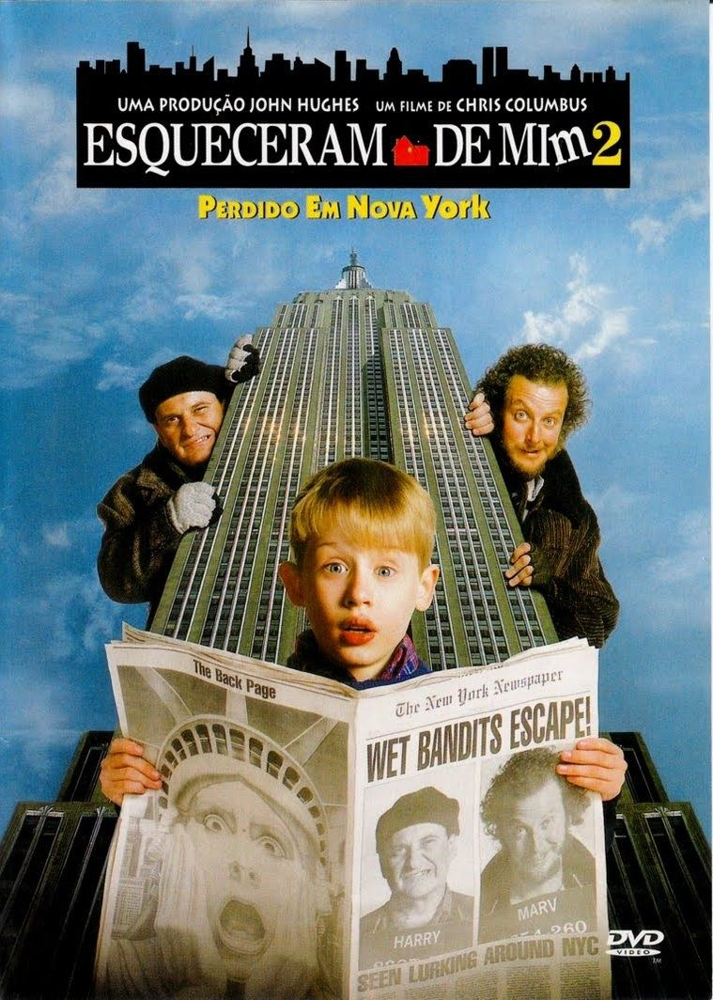
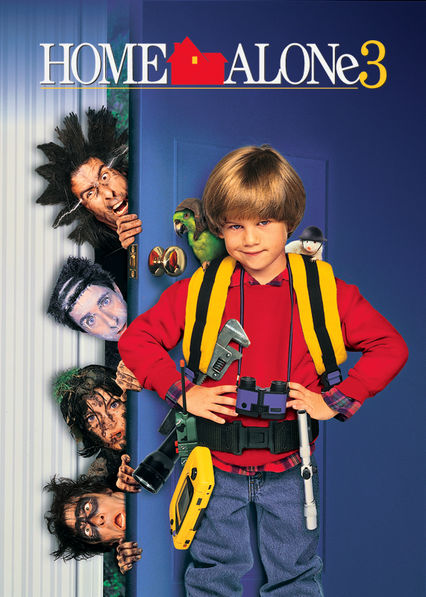
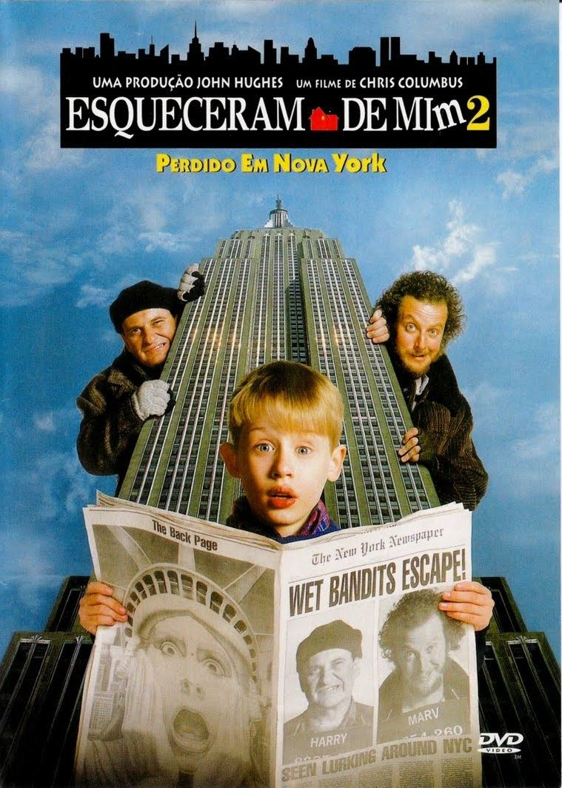
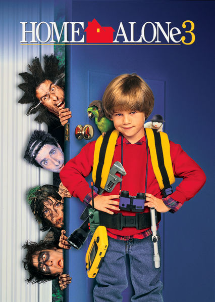

1. The Action - In my opinion, I feel like there is always something exciting happening at every second this movie.
Whether it is, Kevin missing the plane and having to stay home and secure the house, or the robbers trying to break in and kidnap poor Kevin who is all alone.
So in all, one mai reason that this is my favorite movie is becuase or the plethra of action scenes.
2. The Characters - Another reason I love this movie is because the plot of characters.
I feel like they have such great personality and put on a show for the audience to watch.Lastly, I feel like the plot of the movie worked very nice and there was never a dull moment.
3. The Spirit - The last reason I think this is the best Christmas movie of all time is due to the spirit!
I feel like when I watch it, the Christmas vibes are always there!
It is a great movie to get yourself, your friends, and your family into a Christmas mood!